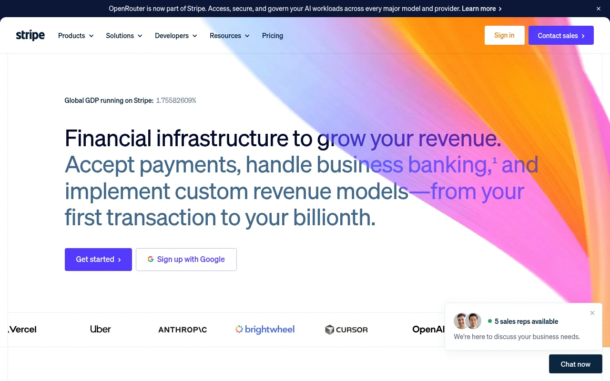

Блок Д · Факультатив · Модуль Д1
Как устроены анимации и кнопки
Ты собираешь находки: стеклянные и жемчужные кнопки, переключатели, карточки-перевёртыши, эффекты, которые бегут за мышкой. Здесь заглянем им «под капот», как в машину. Водить машину можно и без этого, но когда понимаешь, что там внутри, можешь точно объяснить мастеру, что тебе нужно. Код писать самой не придётся.
Три языка любой страницы
Любая кнопка на сайте сделана из трёх слоёв, и у каждого слоя свой язык. Удобно сравнить с человеком: скелет, внешность и характер.
- HTML: скелет. Говорит, что это за вещь: кнопка, заголовок, картинка. Без внешности это просто чёрный текст на белом.
- CSS: внешность, одежда и макияж. Цвет, размер, скругления, тени, а ещё то, как кнопка меняется под мышкой.
- JS (JavaScript): характер и поведение. Что случится по нажатию: проверить ответ, открыть окно, посчитать баллы.
<!-- HTML: что это --> <button>Проверить</button> /* CSS: как выглядит */ button { background: #6b5f8a; border-radius: 14px; } button:hover { transform: translateY(-2px); } // JS: что делает button.onclick = () => проверитьОтвет();
Мини-тест
Кнопка при наведении приподнимается. Чем это сделано?
Наведение и простые анимации это CSS. JS для этого не нужен.
Что именно двигается
Анимация это когда что-то плавно меняется: было здесь, стало там; было маленьким, стало большим. Как мультфильм из множества кадров, только кадры рисует сам браузер. Меняться может: место (сдвиг), размер (масштаб), поворот (в коде все три называются transform, «преобразование»), прозрачность (opacity), размытие (blur) и тень. Нажимай кнопки и смотри:
Как это в жизни: что двигается

1- Градиент Stripe вживую медленно переливается: двигаются только цвета, форма стоит. Открой сайт и посмотри.
Скриншоты настоящих сайтов, ноябрь 2026. Наведи на пункт или нажми его, и номер на картинке подсветится.
Мини-тест
Карточка «вылетает» снизу и проявляется. Какие два свойства?
Это самая частая анимация появления: translateY от 20–30 px до 0 и opacity от 0 до 1.
Длительность и кривая
Дорогая анимация от дешёвой отличается двумя вещами. Длительность: сколько длится. Для кнопок и мелочей 150–350 миллисекунд (это треть секунды, быстрее моргания), для больших переходов 400–600. И кривая (easing): как меняется скорость. Машина не трогается сразу на 60 км/ч и не останавливается мгновенно: она разгоняется и тормозит. Анимация с постоянной скоростью выглядит механично, как робот. Выбирай кривую и нажимай «Запустить».
Мини-тест
Меню открывается за 1,2 секунды. Что не так?
Больше полсекунды на открытие меню ощущается как ожидание. 200–300 мс достаточно.
Как сделаны кнопки из твоих находок
Четыре приёма, которые чаще всего встречаются в твоих находках. Нажимай их, а под каждым объяснение, как это сделано, простыми словами.
Неоморфизм: две тени
Кнопка того же цвета, что и фон, будто выдавлена из пластилина. Объём рисуют две тени: тёмная справа снизу и светлая слева сверху, как будто лампа светит из левого верхнего угла. При нажатии тени переворачиваются внутрь (в коде это слово inset, «внутрь»), и кнопка будто вдавливается.
box-shadow: 6px 6px 12px тёмная, -6px -6px 12px белая; /* нажата */ box-shadow: inset 5px 5px 10px тёмная, inset -5px -5px 10px белая;
Переключатель: скрытая галочка
Внутри это обычная галочка-чекбокс, только спрятанная. Поверх рисуют дорожку и кружок. Когда галочка стоит, кружок отъезжает вправо с лёгким пружинистым перелётом, а дорожка меняет цвет. Как выключатель света с подсветкой.
Стекло: размытие того, что сзади
Полупрозрачный белый фон, тонкая светлая рамка и размытие всего, что под кнопкой (в коде backdrop-filter: blur(), «размыть задний план»). Получается матовое стекло, как дверь в ванную. Важно: стекло видно только на цветном фоне или на фото. На белом его не видно, ведь сквозь стекло нечего размывать.
Жемчуг: градиент как свет
Круговой переход цвета (в коде radial-gradient) от белого блика в левом верхнем углу к сиреневому краю, плюс лёгкая тень внутри снизу справа. Глаз видит это как гладкую выпуклую бусину, на которую падает свет.
Мини-тест
Ты положила стеклянную кнопку на белый фон, и она «пропала». Почему?
Эффект стекла это размытие фона. Белое размытое белое остаётся белым.
Что делает слово inset в тени?
inset переносит тень внутрь элемента. Так рисуют нажатое состояние в неоморфизме и вдавленные поля.
Эффекты за курсором
Все эффекты «за мышкой» устроены одинаково. Программа (JS) всё время спрашивает: «где сейчас мышка?», получает два числа, по горизонтали и вертикали, и по ним что-то двигает: кольцо, кнопку, наклон карточки или пятно света. Как подсолнух, который поворачивается за солнцем. Поводи мышью по полю и переключай режимы.
- Свой курсор: точка и кольцо вместо стрелки. Кольцо «догоняет» с задержкой.
- Магнитная кнопка: кнопка немного тянется к курсору, когда он рядом.
- Наклон (tilt): карточка поворачивается в 3D к курсору, будто её держат в руке.
- Фонарик (spotlight): мягкое пятно света следует за курсором.
Как это в жизни: эффект за курсором
 1
1- На lusion.co вся главная сцена реагирует на движение мыши. Открой и поводи курсором: это и есть «эффект за курсором».
Скриншоты настоящих сайтов, ноябрь 2026. Наведи на пункт или нажми его, и номер на картинке подсветится.
Мини-тест
Почему кольцо курсора выглядит плавным, а не прилипшим?
Этот приём называют интерполяцией (lerp). Чем меньше доля пути за кадр, тем сильнее «тянется» хвост.
Анимации при прокрутке
Блоки на странице появляются, когда до них долистали, как свет в коридоре с датчиком движения: подошла, и включился. Программа следит, какой блок вошёл в окно (этот «датчик» называется IntersectionObserver), и включает ему анимацию. Прокрути окошко ниже:
- Параллакс (parallax): дальний фон едет медленнее, чем то, что впереди. Как вид из окна поезда: столбы мелькают, а горы почти стоят. Появляется ощущение глубины.
- Липкие блоки (sticky): картинка «прилипает» и стоит на месте, а текст рядом листается. Удобно для рассказа по шагам.
- Анимация от прокрутки (scroll-driven): движение идёт ровно настолько, насколько долистали, как перелистывание книжки-мультика. Например, иероглиф пишется черта за чертой, пока листаешь.
Мини-тест
Человек быстро листает до цен, а блоки всё ещё медленно проявляются. Что поправить?
Анимация не должна мешать дойти до нужного. Короткое появление не задерживает чтение.
3D: от карточки до стеклянного куба
Объём на сайте делают двумя способами: попроще, из плоских картонок, и по-настоящему, как в компьютерной игре.
1. CSS 3D: для плоских предметов в пространстве
Первый способ: CSS умеет поворачивать плоские «картонки» в пространстве. Нужно задать перспективу (perspective), то есть как далеко от картонки стоит зритель, и угол поворота. Так сделаны карточки-перевёртыши, а куб ниже собран из шести таких картонок. Нажми на карточку, а куб покрути мышью или пальцем.
2. WebGL и three.js: для настоящего объёма
Второй способ для настоящего объёма, со светом, отражениями и стеклом, как твой стеклянный куб с 天 на фарфоре. Его рисует видеокарта компьютера, как в играх; эта технология называется WebGL. Программисты используют помощника three.js, чтобы было проще. А редактор Spline позволяет собрать 3D-сцену мышкой, почти как в Figma, и вставить на сайт.
- Шейдер (shader): крошечная программа для видеокарты, которая решает цвет каждой точки экрана. Переливающиеся живые градиенты из твоих находок сделаны шейдерами.
- 3D тяжёлое, как фильм в высоком качестве: на слабом телефоне может тормозить и сажать батарею. Поэтому всегда готовят запасной вариант, обычную картинку.
Как это в жизни: 3D на сайте
1- 3D-сцена: в браузере детали крутятся и разлетаются за мышкой. Открой сайт по ссылке и подвигай мышью.
Скриншоты настоящих сайтов, ноябрь 2026. Наведи на пункт или нажми его, и номер на картинке подсветится.
Мини-тест
Для карточки-перевёртыша со словом что нужно?
Плоская карточка в пространстве это простой CSS. WebGL нужен для настоящего объёма, стекла и света.
Библиотеки и инструменты
Сложные анимации редко пишут с нуля, как торт редко пекут без готовой формы. Есть готовые «инструменты-помощники» (их называют библиотеками). Вот названия, которые встречаются в твоих находках, и что значит каждое.
| Название | Для чего | Пример |
|---|---|---|
| CSS | Наведение, нажатие, простые появления | Твои кнопки с uiverse |
| Framer Motion (Motion) | Анимации в React: появления, перетекания, жесты | Карточка перетекает в открытый экран |
| GSAP | Сложные цепочки, анимации по прокрутке | Иероглиф пишется при прокрутке |
| Lottie | Готовая векторная анимация из After Effects | Персонаж радуется ответу |
| Rive | Интерактивная анимация с состояниями | Маскот следит глазами за курсором |
| three.js | 3D-сцены на WebGL | Стеклянный куб с 天 |
| Spline | 3D-редактор без кода, экспорт на сайт | Вращающийся объект на первом экране |
Как описать анимацию словами
Сказать программисту «пусть красиво выезжает» это как сказать парикмахеру «сделайте красиво». Получится не то. Дизайнеры описывают анимацию по пяти пунктам, как рецепт. Так же удобно описывать находку, которую хочешь использовать.
Что меняется: сдвиг снизу 24 px и прозрачность 0 → 1.
Длительность: 400 мс (миллисекунд, почти полсекунды), карточки появляются по очереди с задержкой 60 мс.
Кривая: ease-out или пружина с небольшим перелётом.
Зачем: показать, что карточки урока появились, и направить взгляд сверху вниз.
Правила хорошего движения
- У движения есть причина. Оно показывает связь (откуда пришло), отклик (я нажал) или внимание (смотри сюда). Движение «просто красиво» быстро надоедает.
- Коротко. Треть секунды для кнопок и мелочей. Человек не должен ждать, пока досмотрит анимацию.
- Одна физика. Всё двигается с похожей скоростью и плавностью, как будто в одном мире. Если одна кнопка пружинит, а другая выезжает рывком, это как два актёра из разных фильмов в одной сцене.
- Не во время чтения. Пока человек читает или решает задание, фон стоит на месте.
- Уважай настройку «уменьшить движение». У некоторых людей от анимаций кружится голова. В телефоне и компьютере есть настройка «уменьшить движение» (в коде prefers-reduced-motion), и хороший сайт её слушается: анимации становятся тише или пропадают. Этот курс тоже так умеет.
Мини-тест
На экране задания иероглифы на фоне медленно плавают и мерцают. Что сказать?
Глаз всегда реагирует на движение. Во время задания всё внимание должно быть на задании.
Словарик модуля
Все слова этого модуля в одном месте. Пробегись глазами: если слово понятно и можешь объяснить его своими словами, нажми «Знаю». Галочка «показать только незнакомые» спрячет выученные, так удобно повторять. Итоговый тест по всем словам курса в конце курса.